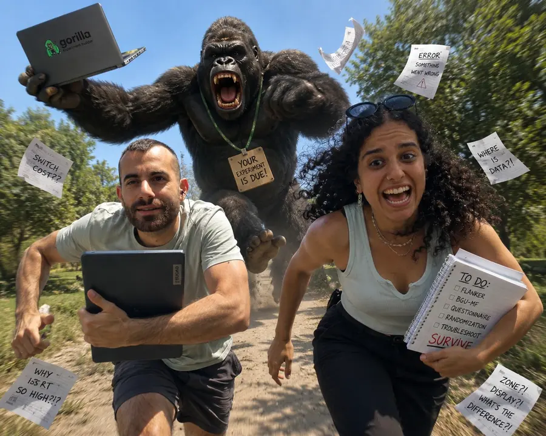

הקשר בין אינהיביציה לפעולות החלפה בשטף מתמטי
איך המוח מנהל שליטה קשבית כאשר אנחנו עוברים בין חיבור וחיסור? האם דיכוי תפיסתי במטלת פלנקר מפעיל את אותם משאבים קוגניטיביים המנהלים עלויות מעבר אריתמטיות?
מסלול העבודה השנתי: מתיאוריה למעבדת קוגניציה
כך הפכנו מרעיונות ראשוניים על הנייר לשלושה ניסויים מתוכנתים שרצים במעבדה.
סקירת ספרות ומאמרים
צלילה למאמרי ליבה באנגלית על סוויצ'ינג ועלות א-סימטרית, פיצוח מושג הלינגרינג וחיבור למודל משפחות הפעולות של ירדן.
תכנון 3 ניסויים ואתיקה
גיבוש פרדיגמות קוגניטיביות מלאות, ניסוח השערות מתחרות, וכתיבת פרוטוקול אתיקה (אושר בהצלחה!).
תכנות מלא ב-Gorilla
בניית המטלות מאפס: שליטה ב-Displays, Zones, Spreadsheets, רנדומיזציה מורכבת של Micro-Sequences ומדידות זמנים מדויקות.
איסוף נתונים במעבדה
הרצת נבדקים במעבדת המחשבים של רופין דרך Sona Systems וניתוחי שונות מתקדמים ב-SPSS.
מהתיאוריה הקוגניטיבית לשאלת המחקר
עמודי התווך של המודל המחקרי: שליפה, מעבר וא-סימטריה.
1. שטף מתמטי וסוויצ'ינג
שטף מתמטי (Math Fluency) הוא היכולת לפתור ביעילות ובמהירות תרגילי חשבון פשוטים. ביצועו דורש גמישות קוגניטיבית ויכולת מעבר (Switching) בין פעולות חשבוניות, מעבר הנושא עמו "עלות מעבר" (Switch Cost).
2. עלות מעבר א-סימטרית
עלות המעבר לפעולה הדומיננטית והקלה גבוהה יותר מהמעבר בכיוון ההפוך. כלומר המעבר מחיסור לחיבור יהיה גבוה יותר מהמעבר מחיבור לחיסור.
3. מנגנון הלינגרינג (Lingering)
כדי לפתור תרגיל חיסור, המערכת חייבת להפעיל אינהיביציה ולדכא את פעולת החיבור הדומיננטית. לעיתים דיכוי זה משייר ומעכב את ביצוע פעולת החיבור בצעד הבא.
3 הניסויים בפלטפורמת Gorilla
מניסוי מתאמי ועד מיקרו רצפים משולבים (Interleaved) ברזולוציית הצעד הבודד.
קשר בסיסי בין יכולות
בחינת הקשר הישיר בין ביצועי אינהיביציה כללית לעלויות מעבר בשטף חשבוני.
- ✔ מטלת פלנקר מלאה: 128 צעדים (50% תואם, 50% לא-תואם) למדידת אפקט פלנקר נקי.
- ✔ מטלת BGU-MF: כ-160 תרגילי חיבור וחיסור, מדידת Repeat לעומת Switch.
- ✔ איזון מלא (Counterbalancing): חצי מהנבדקים מתחילים בפלנקר וחצי בשטף מתמטי.
עירור אינהיביציה
מניפולציה יזומה של הפעלת מנגנון האינהיביציה לפני ביצוע שטף מתמטי:
- ✔ מדידת בסיס (Pre): בלוק ראשוני של שטף מתמטי.
- ✔ פלנקר מניפולטיבי: 100 צעדים עם 75% צעדים לא-תואמים לעירור עומס אינהיביציה.
- ✔ מדידת סיום (Post): בלוק סיום של שטף מתמטי.
השפעה בצעד הבודד
שילוב דינמי של שתי המטלות ברזולוציה עדינה.
- ✔ מיקרו-רצפים ביחס 4:2: 4 צעדי פלנקר בעומס גבוה ➔ מיד לאחריהם 2 תרגילי חשבון.
- ✔ מבחן השערות מתחרות: האם אינהיביציה מייעלת ומאיצה (ייעול), או יוצרת דיכוי עודף שמחמיר את המעבר מחיסור לחיבור (לינגרינג מוגבר)?
- ✔ אימות מהיר במקלדת: מקש F לשגוי ומקש J לנכון לשמירה על שטף מוטורי אחיד.
התנסו בצעד ניסויי ב-Live
בחנו את מהירות התגובה (RT) והאינהיביציה שלכם. במחשב הקישו על המקשים F ו-J, ובנייד פשוט הקישו על משטחי המגע הגדולים למטה!
תוצאות סשן ניסוי 3 (Interleaved)
בודקים כאן כמה זמן נוסף לוקח למוח "להחליף כיוון חשיבה" — לעבור ממשימה אחת (פלנקר) למשימה שונה (חשבון) — בהשוואה להמשך באותה משימה.
הסבר התוצאות יחושב כאן...
אינטרוספקציה, החוויה שלנו וטיפי הזהב לשנה ב'
🌱 איך זה מרגיש מבפנים? (החוויה שלנו)
ההתחלה בסמסטר א' יכולה להרגיש מציפה: מאמרים באנגלית ברמה אקדמית גבוהה, מושגים קוגניטיביים שנראים מופשטים, והמון שאלות פתוחות. המעבר לעבודה על Gorilla הפך את התיאוריה למוחשית.
התרומה שלנו: הבאנו יוזמה, לוחות עבודה משותפים ודיוק מתודולוגי. מה שקיבלנו בתמורה זו שפה מדעית אמיתית ומסוגלות מחקרית עצומה.
💡 3 עצות זהב שהיינו רוצים לשמוע בשנה שעברה:
- 1. חוסר ודאות זה חלק מהמדע: אל תיבהלו אם בהתחלה הכל נראה מסורבל. זה מתבהר לחלוטין ברגע שמתחילים לבנות את הניסוי.
- 2. לא לפחד לשאול שאלות את המרצה: גם אם הן מרגישות מטופשות בסוף מטרת החוקר צעיר היא ללמוד ולהכנס לתחום והמרצה ככל הנראה יעריך את זה שאתם שואלים, מתעניינים ומביעים דעה.
- 3. תשתמשו בנו! כל שאלה, תקלה טכנית או דילמה תיאורטית — אנחנו פה בשבילכם.
מסע הגורילה שלנו: מסמסטר א' לסמסטר ב'
גררו את הפס כדי לעבור מסמסטר א' לסמסטר ב' — ולראות איך הלחץ הפך לניצחון.

סמסטר א' 🦍💨